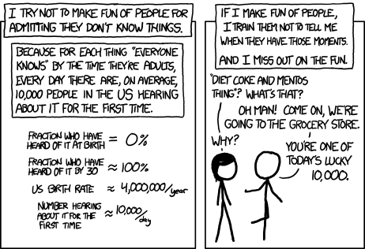

Brad
About Me
Work at Evolve Labs, primarily Rails developer, with some system administration mixed in.
Background
Java -> PHP -> HTML/CSS -> iOS -> Android(Java... again) -> Ruby
The Evolve Team

Share the Load
Make it easy for everyone. Don't be the sole gatekeeper.
Prioritizing Tasks
Roadmap, and stick to it.
Roadmap
"Not in this release"
Make things Easy

Dev Environment
Vagrant + Ansible

Development environment setup with a single command:
vagrant up
PR Handling
Assign them!
(and feel free to ocassionally nag remind)
Pictures are Helpful
Pair Programming
Done ad-hoc, organized via Slack/chat.
Tabs or Spaces?!?!
Spaces, obviously.
Code Style
Decided by majority, enforced via EditorConfig.
.editorconfig
# Unix-style newlines with a newline ending every file
[*]
end_of_line = lf
insert_final_newline = true
# Matches multiple files with brace expansion notation
# Set default charset
[*.{js,py}]
charset = utf-8
# 2 space indentation
[*.rb]
indent_style = space
indent_size = 2
# tabs for HTML & erb
[*.{html,erb}]
indent_style = tab
EditorConfig Plugins
Code for the Edge Case
Find situations where code WON'T work.
Seeds are Your Friend
Populate the development database with a metric shit-ton of data.
Don't Trample Each Other's Work
Tests will ensure nothing breaks.

Super Tests!
Rspec, FactoryGirl, VCR, Simplecov, and Ladle
SimpleCov

Travis-CI
Get Notified

.travis.yml
language: ruby
rvm:
- 2.2.1
bundler_args: "--without production"
script:
- rake db:test:prepare
- bundle exec rspec spec
before_script:
- psql -c "CREATE USER evolve WITH SUPERUSER" -U postgres
before_install:
- sudo apt-get update
install:
- sudo apt-get install default-jre-headless
- bundle install --without production
Keep Tests Snappy!
config.before(:suite)
Switching out in place of config.before(:all) reduced test time by 75%